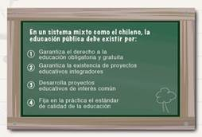
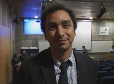
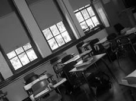
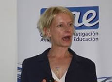

<!DOCTYPE HTML PUBLIC "-//W3C//DTD HTML 4.01 Transitional//EN"
"http://www.w3.org/TR/html4/loose.dtd">
<html>
<head>
<title>Bolet&iacute;n CIAE | Enero 2016 - N&deg; 45</title> 
<meta http-equiv="Content-Type" content="text/html; charset=iso-8859-1">
</head>
<style>
 body{ 
 
font-size:14px;
line-height:113%;
font-family:"Lucida Sans Unicode";
 }
</style>

<body  style="font-size:14px;line-height:113%;  " >

<table style="font-family:"Lucida Sans Unicode";width:100% "  cellpadding="5" cellspacing="5" >
<tr>
<td style="width:30% ">&nbsp;</td>
<td  style="width:750px" >
    <table style="width:750px;">
    <tr>
    	<td colspan="2" width="749"  height="120px" style="background-image: url('imagenes/base/boletin_barra_superior.fw.png'); background-repeat:no-repeat; vertical-align:bottom" >
          
          
           
          <p style="text-indent: 0pt;text-align: left; color:#ffffff">&nbsp;&nbsp;&nbsp;<strong>Enero 2016 - N° 45</strong>
           </p>
           </td>
     </tr>
     <tr>
     <td  style="padding-top:20px">
     
     <table style="width:100%" cellspacing="0" cellpadding="5">
     <tr><td colspan="2" style="font-size:17px; color:#DB9827; text-transform:uppercase"><strong>EDUCACIÓN PÚBLICA:
EVIDENCIA SOBRE SU ESTADO Y DESAFÍOS</strong>
<p></td>  </tr>
     <tr><td colspan="2">Garantizar el derecho a la educación obligatoria y gratuita y la existencia de proyectos educativos integradores.
Esos son algunos de los fundamentos de la educación pública. El CIAE presenta un compendio con la
evidencia generada sobre el tema, con el objetivo de alimentar el debate.</td>  </tr>
     <tr><td style="vertical-align:top">
     
     </td><td  >¿Qué se enende por educación pública? ¿Cuál es
su estado a nivel internacional? ¿Cómo se explica
su rendimiento en pruebas estandarizadas? ¿Qué
propuestas existen para revitalizarla? El presente
compendio presenta invesgaciones y ar3culos
publicados en revistas nacionales e internacionales
desarrollados por nuestros invesgadores en
el Centro de Invesgación Avanzada en Educación.
 

<table style="width:100%" cellpadding="7">
<tr><td></td><td style="width:40%;text-align:center; background-color: #196797; color:#ffffff; text-transform:uppercase"><a href="http://www.ciae.uchile.cl/index.php?page=view_noticias&id=774&langSite=es&externo=boletin" style="color:#ffffff;">VER Más</a></td></tr>
</table>

</td>  </tr>
     
     </table>
     
     
     
     	</td><td style="width:30%; vertical-align:TOP; padding-top:20px;">
        <table style="width:100%; background-color: #D5D5D5; font-size:14px" cellpadding="6">
        <tr><td style="font-size:17px;   text-transform:uppercase; text-align:center">AGENDA</td></tr>
        
        <tr>
        <td><a href="http://www.ciae.uchile.cl/index.php?page=view_noticias&id=770&langSite=es&externo=boletin" style="text-decoration:none; color:#000000" target="_blank"><strong>&raquo; 19 de enero:</strong>
Los desafíos de la Educación Superior Pública en el Siglo XXI: Estado, Sociedad Civil, y universidad como esfera pública </a></td>
        </tr>
        
        
        <tr>
        <td><a href="http://www.ciae.uchile.cl/index.php?page=view_noticias&id=764&langSite=es&externo=boletin" style="text-decoration:none; color:#000000" target="_blank"><strong>&raquo; 21 de enero:</strong>
 Seminario
"Neurophenomenology:
Building a science of
experience" </a></td>
        </tr>
        
        <tr>
        <td><a href="http://www.ciae.uchile.cl/index.php?page=view_noticias&id=767&langSite=es&externo=boletin" style="text-decoration:none; color:#000000" target="_blank"><strong>&raquo; 25 y 26 de enero:</strong>

Seminario Internacional
Educacion, Sociedad y
Derechos Humanos: El Aporte
de la Neurociencia </a></td>
        </tr>
        
        <tr>
        <td><a href="http://www.ciae.uchile.cl/index.php?page=view_noticias&id=772&langSite=es&externo=boletin" style="text-decoration:none; color:#000000" target="_blank"><strong>&raquo; 31 de marzo:</strong>
 Vence
plazo para concurso
internacional ostdoctorado </a></td>
        </tr>
        
        
        </table>
        
        
        </td>
     </tr>
     <tr>
     <td colspan="2" style="font-size:17px; color:#196797; text-transform:uppercase">noticias</td>
     </tr>
     <tr>
     <td colspan="2">
     
     
     <table style="width:100%" cellpadding="5">
         <tr>
         <td style="width:30%"> </td>
         <td style="vertical-align:top"><p style=" color:#DB9827;"><strong>Stephan Vincent-Lancrin (OECD): "Lo fundamental es reformar"</strong></p>
    Stephan Vincent-Lancrin, analista senior en el Centro para la Invesgación e Innovación
    Educacional de la OCDE y responsable del proyecto para el futuro de la
    Educación Superior, visitó el país invitado el CIAE y MMC Consultores, en el marco
    del proyecto Podemos Innovar. "Innovación es el diseño de nuevos productos,
    procesos, pedagogías, organizaciones y maneras de relacionarse para obtener un
    resultado significavamente mejor que el anterior", dice
    
    <table style="width:100%" cellpadding="7">
    <tr><td></td><td style="width:20%;text-align:center; background-color: #196797; color:#ffffff; text-transform:uppercase"><a href="http://www.ciae.uchile.cl/index.php?page=view_noticias&id=771&langSite=es&externo=boletin"  target="_blank" style="color:#ffffff;">VER Más</a></td></tr>
    </table>
    </td>
         </tr>     
     </table>
     
     
     <table style="width:100%" cellpadding="5">
         <tr>
         <td style="width:30%"> </td>
         <td style="vertical-align:top"><p style=" color:#DB9827;"><strong>Crean Centro Chileno para la Excelencia en Liderazgo Educativo</strong></p>
    
Instalar y fortalecer las capacidades de liderazgo en el sistema escolar de manera de
potenciar el aporte que los direcvos puedan hacer a la mejora escolar y a su sostenibilidad
en el empo. Ese es el objevo del Centro Chileno para la Excelencia en el
Liderazgo Educavo, creado por la U. Católica de Valparaíso, con las universidades de
Chile y de Concepción, la Fundación Chile y el Instuto de Estudios
    
    <table style="width:100%" cellpadding="7">
    <tr><td></td><td style="width:20%;text-align:center; background-color: #196797; color:#ffffff; text-transform:uppercase"><a href="http://www.ciae.uchile.cl/index.php?page=view_noticias&id=765&langSite=es&externo=boletin"  target="_blank" style="color:#ffffff;">VER Más</a></td></tr>
    </table>
    </td>
         </tr>     
     </table>
     
      <table style="width:100%" cellpadding="5">
         <tr>
         <td style="width:30%"> </td>
         <td style="vertical-align:top"><p style=" color:#DB9827;"><strong>Kate Cain, U. de Lancaster: Las claves de la comprensión lectora</strong></p>
   
En el proceso de extraer el significado de un texto, es decir, de la comprensión lectora,
intervienen múlples factores. Por eso la comprensión lectora no es sólo el
resultado de la decodificación, sino que del reconocimiento de palabras y de la comprensión
oral. Así lo planteó la directora de la Escuela de Psicología de la U. de Lancaster,
Kate Cain, quien dictó una charla invitada por el CIAE.
    
    <table style="width:100%" cellpadding="7">
    <tr><td></td><td style="width:20%;text-align:center; background-color: #196797; color:#ffffff; text-transform:uppercase"><a href="http://www.ciae.uchile.cl/index.php?page=view_noticias&id=758&langSite=es&externo=boletin"  target="_blank" style="color:#ffffff;">VER Más</a></td></tr>
    </table>
    </td>
         </tr>     
     </table>
     
     
     
     
     </td>
     </tr>
     
     <tr> 
    <td colspan="2" width="749"  height="42px" style="background-image: url('imagenes/base/boletin_barra_inferior.jpg'); background-repeat:no-repeat; color:#F8F5F5; vertical-align: middle; padding-left:20px;" >
         
<strong>Contáctenos www.ciae.uchile.cl | contacto@ciae.uchile.cl</strong> </td></tr>
    
    
    </table>


</td>

<td style="width:30% ">&nbsp;</td>
</tr>
<tr>
<td></td><td style="text-align:center ">
Descargue el bolet&iacute;n en formato PDF <a style="border:0px none; text-decoration:none;"  target="_blank" href="http://www.ciae.uchile.cl/download.php?file=boletin/boletin_45_201601.pdf">aqu&iacute;</a>  <br>
  
	   <p><small>CIAE - Centro de Investigación Avanzada en Educación<br /> 
Universidad de Chile<br />  
 <a style="border:0px none;text-decoration:none;" href="http://www.ciae.uchile.cl/" target="_blank" >http://www.ciae.uchile.cl/</a></small></p>

 

<small>Si usted no puede ver este mail correctamente presione <a style="border:0px none;text-decoration:none;" href="http://www.ciae.uchile.cl/mail_list/email/235.html"  target="_blank" >http://www.ciae.uchile.cl/mail_list/email/235.html</a></small><br />
<br />

  <small>  <p  align="center" class="style1">
 Si usted desea ser removido de nuestra base de datos en forma definitiva pinche  <a href="http://www.ciae.uchile.cl/mail_list/eliminarSuscripcion.php" target="_blank" >aquí </a>  </p></small> 
  

	    <p>&nbsp;</p>
</td><td></td>
</tr>
<tr>
<td></td><td style="text-align:center ">
<!--pie-->
</td><td></td>
</tr>

</table>
</body>
</html>